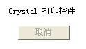
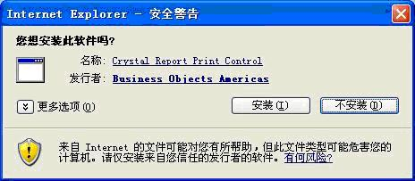
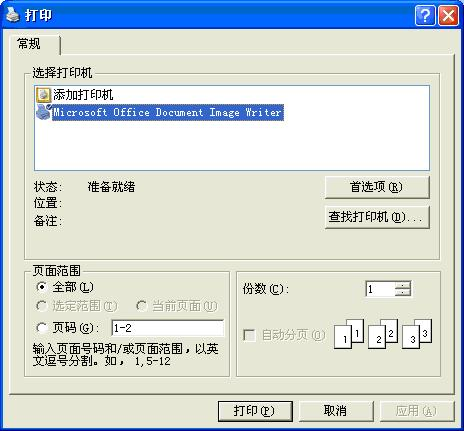
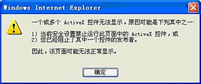
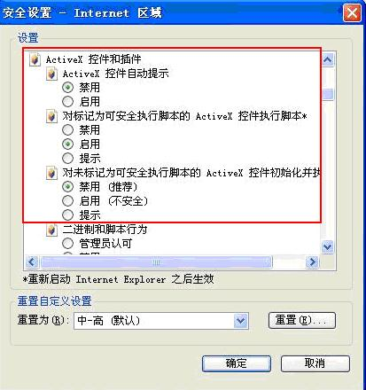

当此段话上方出现如下显示时，说明打印控件已安装完毕，也就是说可以进行打印了！

如果没有出现，按如下提示操作：
第一次打印时，要求安装打印插件。安装方法是：
A、右键单击浏览器顶部出现的“阻止窗口”对话框，选定“总是允许来自此站点的弹出窗口”，单击“是”按钮确认，并单击弹出窗口中的“重试”按钮，弹出“Crystal Reports
Viewer”对话框；稍后弹出“Crystal Report Print Control
软件安装”对话框,如下图。

单击“安装”按钮，如有防病毒软件提示，请选择允许其安装；安装完成后，弹出“打印对话框”，如下图。

选择打印机并设置打印的页码和份数等，单击“打印”按钮开始打印。
B、安装打印插件时，如果出现“一个或多个ActiveX控件无法显示，原因可以是下列其中之一”或“当前安全设置禁止运行该页中的ActiveX控件。因此，该页可能无法正常显示”等对话框，如下图：

是因为IE安全设置阻止了ActiveX控件的下载，解决方法是：单击IE浏览器中的“工具”下的“Internet选项”，弹出“Internet选项”对话框，单击“安全”标签，单击“自定义级别”后打开“安全设置”窗口，将下图中所示所有ActiveX选项设为“启用”重复A操作过程。

其它打印操作与此相同，打印插件每台电脑只安装一次(计算机系统重新安装后，需要再次安装此插件，设置完成请将先前的设置还原)。 |